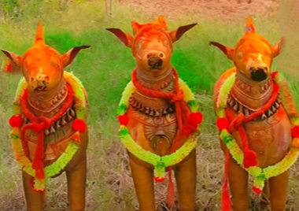
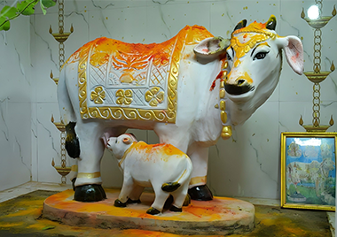
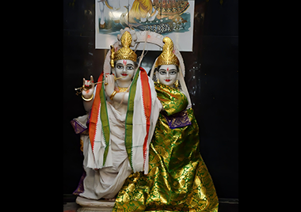
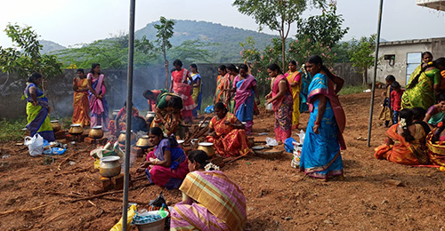
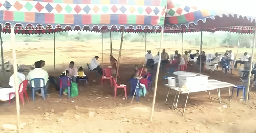
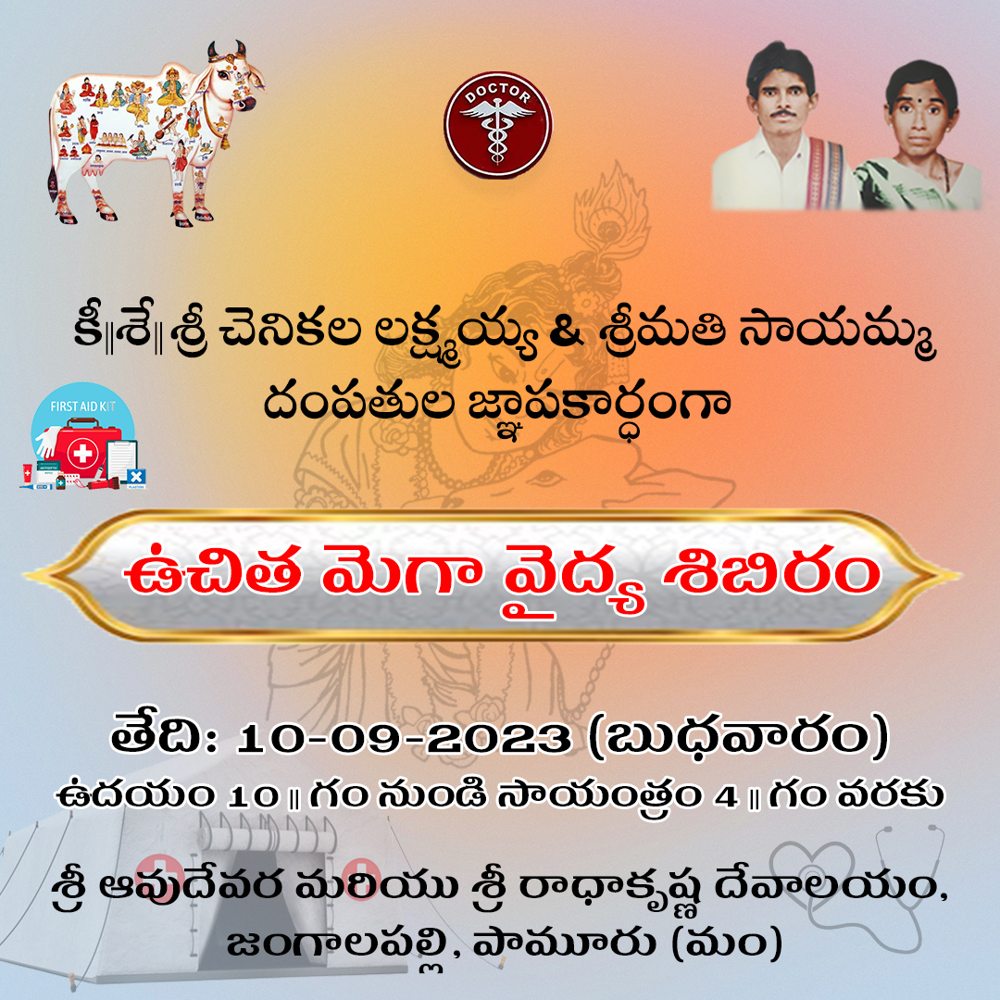
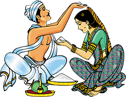
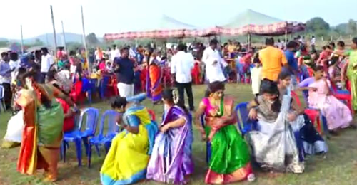
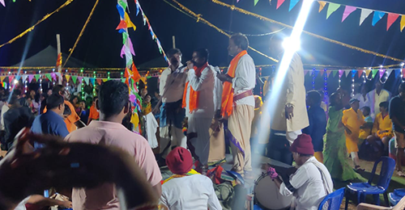
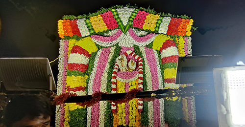
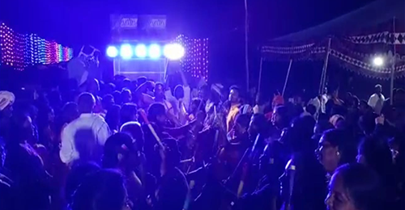
ముహూర్తం మరియు శ్రీ రాధా కృష్ణ కళ్యాణ ఆహ్వాన పత్రిక
వరుడు : చి.. శ్రీ కృష్ణ
వదువు : చి..ల..సౌ.. శ్రీమతి రాధ
ముహూర్తమ్ :
శ్రీ శోభకృతు నామ సంవత్సర శ్రావణ బహుళ ఏకాదశి ఆదివారం ది. 10-09-2023 వ తారీఖు ఉదయం గం
11:08 ని లకు పునర్వసు నక్షత్రయుక్త వృచిక లగ్న పుష్కరాంశమునందు శ్రీ రాధాకృష్ణ ల కళ్యాణ
మహోత్సవ శుభ ముహూర్తం నిశ్చయించినారు.
స్థలం :
శ్రీ ఆవుదేవర మరియు శ్రీ రాధా కృష్ణ దేవాలయం , జంగాలపల్లి.